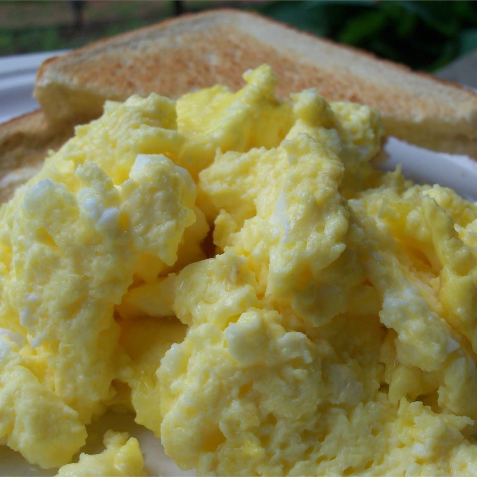

Home
Scrambled Eggs

A very popular breakfast staple in America, second only to bacon
Ingredients
- Eggs (Duh)
- 1 TBSP Butter
- Salt and pepper to taste
Instructions
- Crack the eggs in a bowl whisking thoroughly, bonus points if its a giant bowl with an actual whisk
- Heat pan over medium to medium high heat, droplets of water should dance around the pan
- Add the butter to the pan, ideally it shouldn't be brown by the time the eggs are in
- Add eggs using a rubberized spatula to move the eggs around the pan to avoid overcooking
- Continue shuffling the eggs around until almost all liquid is solid, remove from heat
- At this point using the residual heat, solidify the remaining liquid and then serve
- Season with salt and pepper to taste
Please do not try to "fry" the eggs, they should be tender.
If you want better egg frying skills check out Gordon Ramsay's Scarmbled Eggs